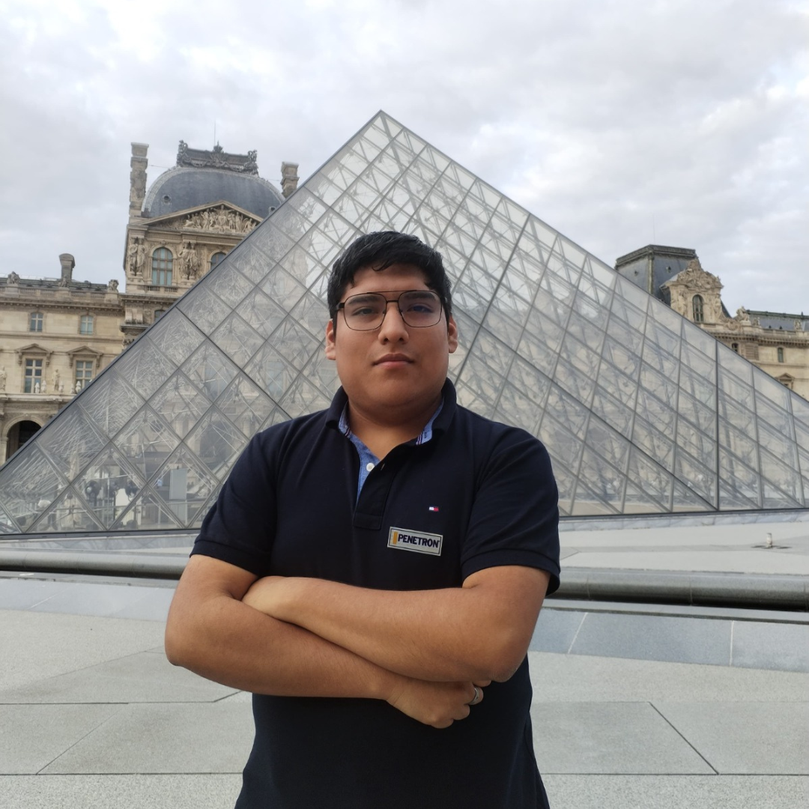
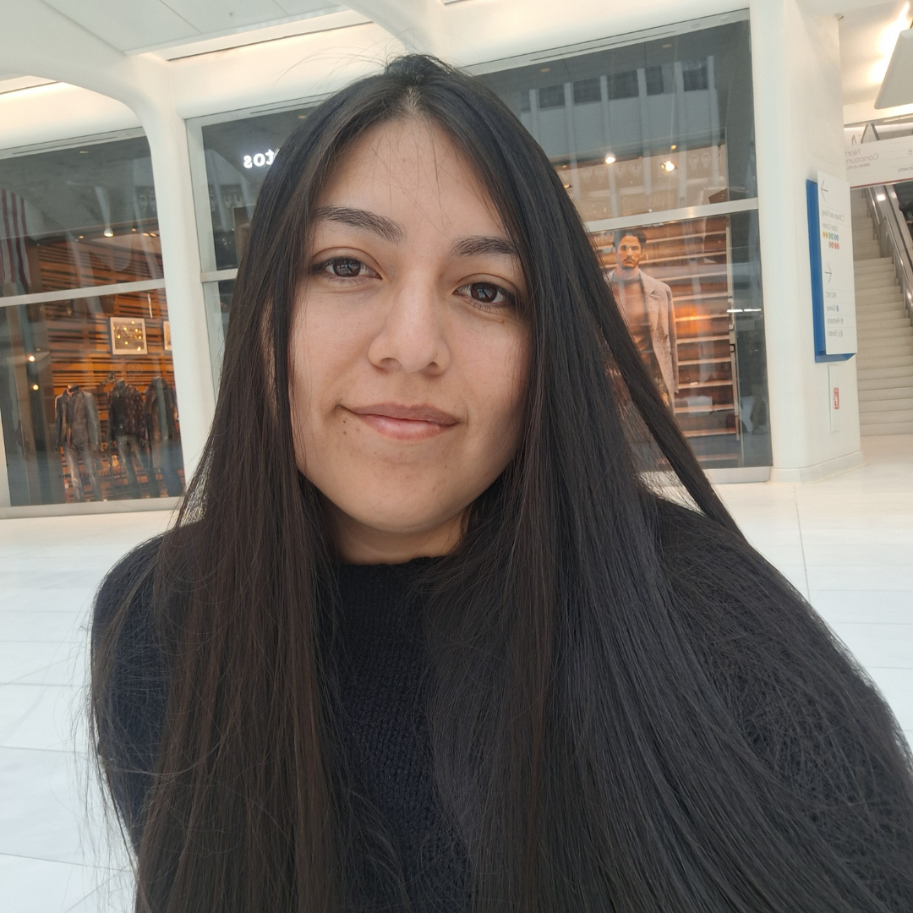

Área de Logística
Actividades Principales
- Gestión integral de suministros y materiales para proyectos de concreto, asegurando la disponibilidad oportuna y eficiente de recursos en talleres y eventos.
- Organización logística de actividades presenciales, incluyendo transporte, montaje de espacios y coordinación con proveedores para talleres y competencias ACI.
- Planificación y ejecución de la cadena de suministro en investigaciones de campo, optimizando costos y minimizando impactos ambientales en el uso de materiales sostenibles.
- Coordinación con aliados externos para el almacenamiento y distribución de prototipos y muestras, garantizando la seguridad y trazabilidad en todas las operaciones.

Kevin Centeno
Director de Logística

Guianella Pomalia
Directora de Logística
Miembros 2025
| Nombre | Cargo | |
|---|---|---|
| Rodrigo Silvera | Sub - Director |